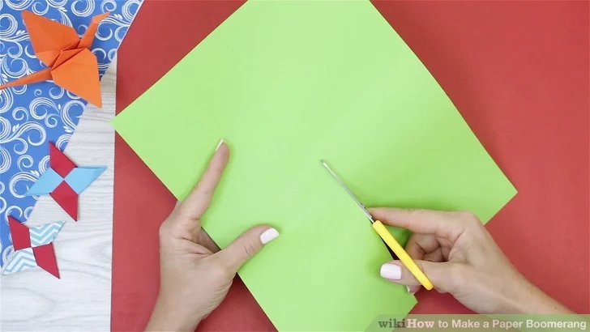
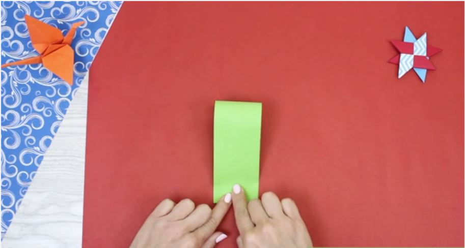
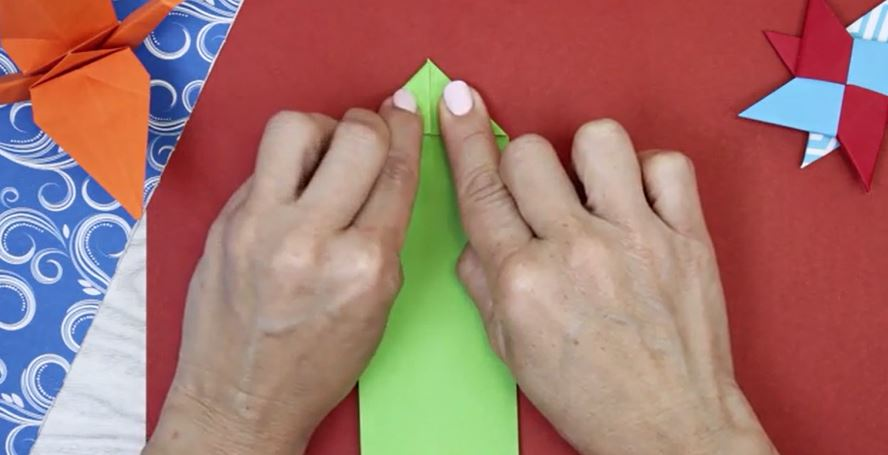

How to Make a Working Paper Boomerang
Create an amazing paper boomerang that actually comes back to you! Follow these simple steps:
Materials Needed:
- 1 sheet of sturdy paper or cardstock (letter size or A4)
- Scissors
- Ruler
- Pencil
Steps to Make Your Boomerang:
- Cut your paper into a long strip about 2 inches (5 cm) wide. 
-
Fold the strip in half to find the center point.

- From the center, bend the strip to form a 120-degree angle on both sides. 
- Fold the ends up slightly (about 15 degrees) to create an upward tilt. 
-
Test throw your boomerang by holding it vertically and flicking it with a snap of your wrist.

-
Practice throwing in an open space away from people and objects.

Tips for Success:
- Throw on a calm day with minimal wind
- Throw with a vertical orientation
- Use a quick, snapping motion
- Practice your technique - it may take several tries to get it right